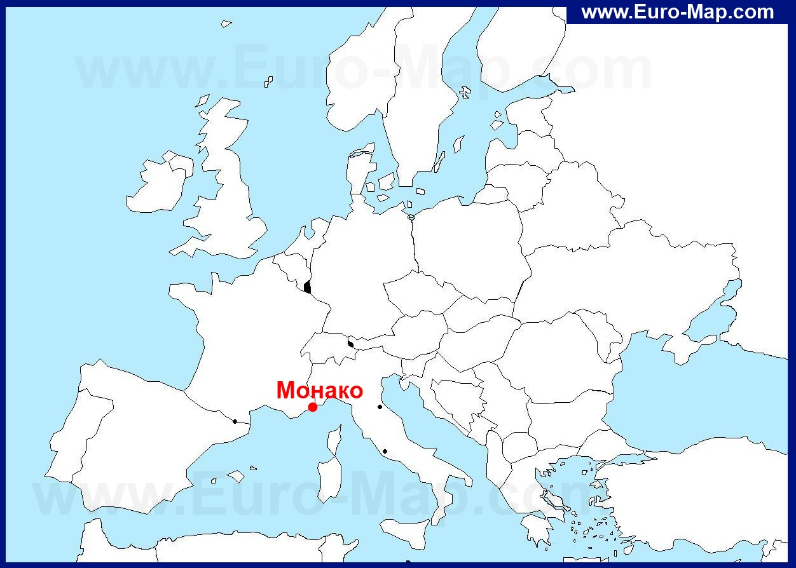

| info | map |
|
Кня́жество Мона́ко — карликовое государство, ассоциированное с Францией, расположенное на юге Европы на берегу Лигурийского моря; на суше граничит с Францией. Является одной из самых маленьких и наиболее густонаселённых стран мира. Княжество широко известно благодаря казино в Монте-Карло и проводимому здесь этапу чемпионата Формулы-1 — «Гран-при Монако».

|
|